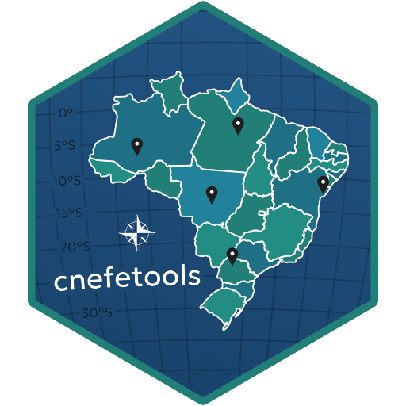
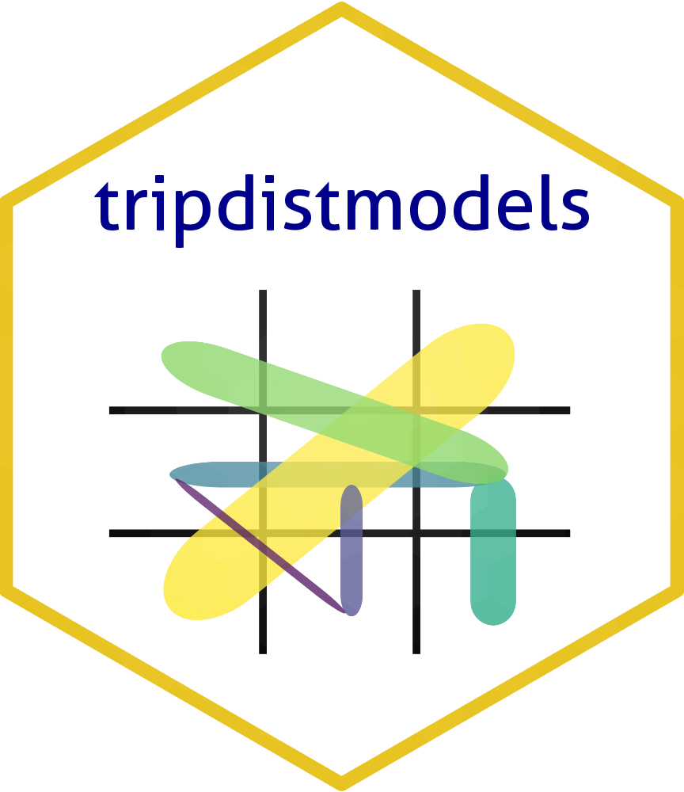
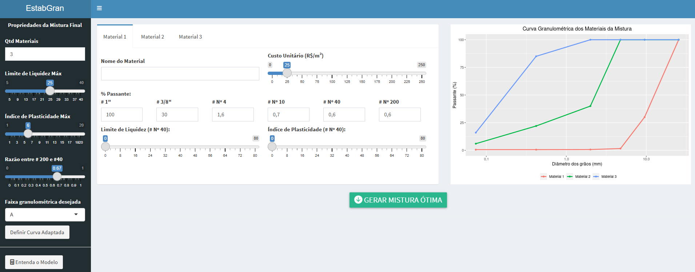
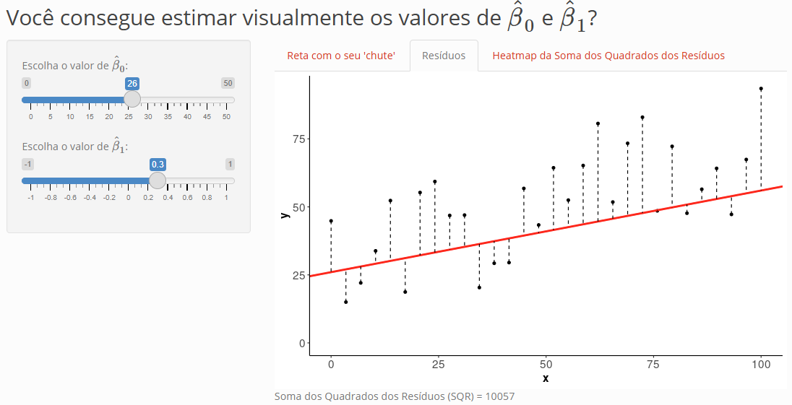
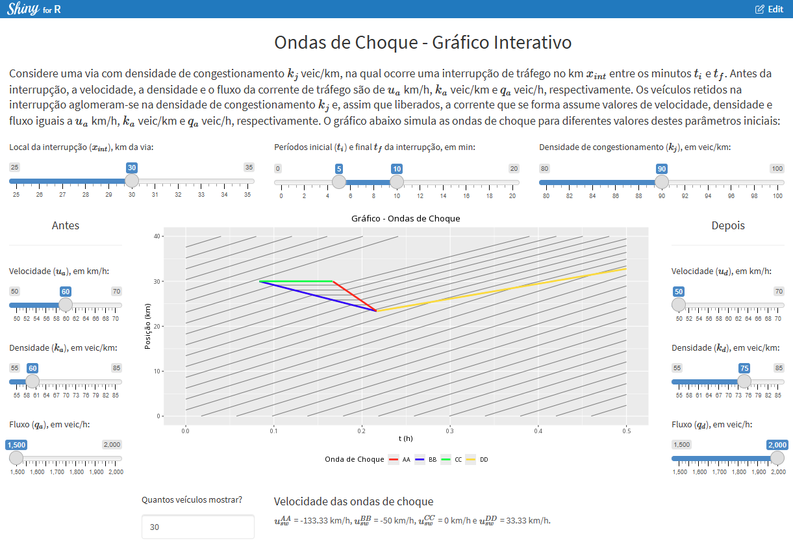

R packages
{cnefetools}
 The Cadastro Nacional de Endereços para Fins Estatísticos (CNEFE) is a nationwide address register maintained by the Brazilian Institute of Geography and Statistics (IBGE) and updated during each Population Census, covering more than 100 million dwellings and establishments across Brazil. {cnefetools} is an R package that provides functions to download and read municipality-level CNEFE data, spatially aggregate addresses, compute land-use mix indices, and perform dasymetric interpolation of census tract variables using CNEFE dwelling points as ancillary data. Results can be produced on H3 hexagonal grids or user-supplied polygons, and heavy operations leverage a DuckDB backend for fast, in-process execution.
{tripdistmodels}
 {tripdistmodels} is an R package for trip distribution modeling in transportation planning. It implements the two classic workhorses of the four-step travel demand model’s distribution step: furness(), which applies Iterative Proportional Fitting (IPF) to balance an existing seed origin-destination (OD) matrix to specified production and attraction targets; and gravit(), which synthesizes OD matrices from scratch using a doubly constrained gravity model with calibrated deterrence functions. Three deterrence forms are supported (exponential, power, and combined), alongside three parameter estimation strategies: Poisson log-likelihood maximization (via L-BFGS-B), the Hyman heuristic for exponential deterrence, and fixed user-supplied values. Both functions accept OD and cost data as square matrices or long tables, making the package flexible for different data workflows common in transportation planning practice.
Datasets
Hospital admission flows from the Brazilian SUS (2008–2024)
 This dataset compiles inpatient hospital authorization records from Brazil’s Sistema Único de Saúde (SUS), organized as origin-destination flow tables capturing intercity patient movements across the country’s public healthcare network. Covering 2008 to 2024 (17 years) and all Brazilian municipalities, it contains nearly 200 million unique hospitalization records stored in columnar Parquet format (one file per year) alongside aggregated OD flow tables stratified by procedure complexity (medium vs. high) and category (diagnostic, clinical, surgical, and transplants). Supporting files include the R scripts used for data retrieval and processing, municipal health region mapping tables, and geospatial polygon files. The dataset’s scale and longitudinal depth make it particularly suited for research on healthcare access, regional health planning, and geographic disparities in the Brazilian public health system.
This dataset compiles inpatient hospital authorization records from Brazil’s Sistema Único de Saúde (SUS), organized as origin-destination flow tables capturing intercity patient movements across the country’s public healthcare network. Covering 2008 to 2024 (17 years) and all Brazilian municipalities, it contains nearly 200 million unique hospitalization records stored in columnar Parquet format (one file per year) alongside aggregated OD flow tables stratified by procedure complexity (medium vs. high) and category (diagnostic, clinical, surgical, and transplants). Supporting files include the R scripts used for data retrieval and processing, municipal health region mapping tables, and geospatial polygon files. The dataset’s scale and longitudinal depth make it particularly suited for research on healthcare access, regional health planning, and geographic disparities in the Brazilian public health system.
Origin-Destination Survey of the Salvador Metropolitan Region (2012)
 This repository contains processed tabular and geographic data from the 2012 Origin-Destination Mobility Survey of the Região Metropolitana de Salvador (RMS), originally conducted by the state government of Bahia, Brazil. The source material (a household travel survey covering trips across the metropolitan area) was processed in R and made available in
This repository contains processed tabular and geographic data from the 2012 Origin-Destination Mobility Survey of the Região Metropolitana de Salvador (RMS), originally conducted by the state government of Bahia, Brazil. The source material (a household travel survey covering trips across the metropolitan area) was processed in R and made available in .rda format for ease of use. The repository includes six questionnaire response tables (households, residents, activities, trips, security, and trip-link matrix), accompanying data dictionaries with field descriptions and variable code lookups, and geographic polygon and point files for traffic zones and subzones in CRS 4674 (SIRGAS 2000). A vignette illustrates an example application producing an origin-destination flow map between zones.
Shiny Apps
DinFerr — Railway Dynamics Simulator
 DinFerr is an interactive educational dashboard built with R Shiny, developed as a companion tool for the Railways Engineering course (ENG133) at UFBA. The app simulates train dynamics by computing the equilibrium velocity, the speed at which locomotive tractive force equals total movement resistance, from user-supplied infrastructure and rolling stock parameters. Track inputs cover slope, curve radius, and adhesion coefficient, whereas locomotive inputs cover power, transmission efficiency, weight, frontal area, and axle count and wagon inputs cover fleet size, gross weight, axles, and frontal area. All calculations are fully reactive, updating in real time as parameters change. The main output is a tractive effort vs. resistance chart (plotted against speed) showing the adhesion-limited plateau, the power-limited hyperbolic decay, and their intersection with the resistance curve. Three output metrics are displayed: available tractive effort, minimum velocity, and equilibrium velocity.
DinFerr is an interactive educational dashboard built with R Shiny, developed as a companion tool for the Railways Engineering course (ENG133) at UFBA. The app simulates train dynamics by computing the equilibrium velocity, the speed at which locomotive tractive force equals total movement resistance, from user-supplied infrastructure and rolling stock parameters. Track inputs cover slope, curve radius, and adhesion coefficient, whereas locomotive inputs cover power, transmission efficiency, weight, frontal area, and axle count and wagon inputs cover fleet size, gross weight, axles, and frontal area. All calculations are fully reactive, updating in real time as parameters change. The main output is a tractive effort vs. resistance chart (plotted against speed) showing the adhesion-limited plateau, the power-limited hyperbolic decay, and their intersection with the resistance curve. Three output metrics are displayed: available tractive effort, minimum velocity, and equilibrium velocity.
EstabGran — Pavement Base Mixture Optimizer
 EstabGran is an R Shiny web application for optimizing material dosing in granulometric stabilization of pavement base layers. Given a set of candidate materials (soils and aggregates), the app determines the blend proportions that satisfy Brazilian particle-size distribution requirements at minimum total cost, using a Linear Programming model solved via the lpSolve package. Users specify up to five materials — each with unit cost, gradation curve (six sieves), liquid limit, and plasticity index — and select a target specification band (curves A–F from the DNIT IPR-719 Pavement Manual) or define custom gradation limits. When a feasible solution exists, the app returns the optimal proportions, the resulting mixture cost in R$/m³, and a particle-size distribution chart of the blend overlaid on the specification envelope to confirm compliance. The app was presented at the 37th ANPET Congress (Santos, 2023).
betasMMQvisual — OLS Visual Explorer
 betasMMQvisual is an interactive educational Shiny app designed to build visual intuition for the Ordinary Least Squares (OLS) method in simple linear regression. The user manually adjusts two sliders — the intercept (β₀) and the slope (β₁) — and observes in real time how their chosen line relates to the data across three views: a scatter plot with the fitted line, a residuals plot showing the squared vertical distances being minimized, and a heatmap of the Sum of Squared Residuals (SSR) over the full (β₀, β₁) parameter space with the current position marked. The heatmap reveals the bowl-shaped convex surface of the OLS objective function and its unique minimum, inviting users to discover the OLS estimates through guided trial and error rather than being handed the formula directly.
OndasChoqueTrafego — Traffic Shock Wave Simulator
 OndasChoqueTrafego is an interactive educational Shiny app for visualizing traffic shock waves arising from a temporary road interruption, based on the Lighthill-Whitham-Richards (LWR) macroscopic model. The user defines the location and duration of the interruption, the jam density, and the flow, density, and speed of the traffic stream before and after the event. From these inputs, the app analytically computes up to four shock wave speeds — the backward queue-forming wave (BB), the forward discharge wave (AA), the stationary wave at the interruption point (CC), and, when the queue grows faster than it dissipates, a platoon-dissolution wave (DD). The main output is a time-space diagram showing individual vehicle trajectories alongside the color-coded shock wave boundaries, with the computed wave speeds displayed in mathematical notation below the chart.
Standalone Scripts
G-SIVAR
 G-SIVAR (Global Spatial Indicator Based on Variogram) is an R script implementing a global spatial autocorrelation indicator that addresses two key limitations of classical alternatives such as Moran’s I and Geary’s c: their assumption of spatial isotropy and their restriction to continuous, normally-distributed data. G-SIVAR adapts the semivariogram concept from geostatistics into a scalar index of spatial dissimilarity, supports directional analysis to detect anisotropy, and applies to both quantitative and qualitative variables. The procedure fits a theoretical semivariogram to the empirical data across multiple directions, builds a null distribution via Monte Carlo randomization, and derives the G-SIVAR value and its significance from standardized semivariance. The method was validated on household car-trip data from the 2012 São Paulo Origin-Destination Survey, where it detected statistically significant spatial dependence and directional anisotropy (a nuance that Moran’s I cannot capture) and was published in the Bulletin of Geodetic Sciences journal in 2019.
G-SIVAR (Global Spatial Indicator Based on Variogram) is an R script implementing a global spatial autocorrelation indicator that addresses two key limitations of classical alternatives such as Moran’s I and Geary’s c: their assumption of spatial isotropy and their restriction to continuous, normally-distributed data. G-SIVAR adapts the semivariogram concept from geostatistics into a scalar index of spatial dissimilarity, supports directional analysis to detect anisotropy, and applies to both quantitative and qualitative variables. The procedure fits a theoretical semivariogram to the empirical data across multiple directions, builds a null distribution via Monte Carlo randomization, and derives the G-SIVAR value and its significance from standardized semivariance. The method was validated on household car-trip data from the 2012 São Paulo Origin-Destination Survey, where it detected statistically significant spatial dependence and directional anisotropy (a nuance that Moran’s I cannot capture) and was published in the Bulletin of Geodetic Sciences journal in 2019.
Population change with IBGE statistical grid (2010–2022)
 This self-contained R script automates the full pipeline from raw data download to an interactive choropleth map of intra-urban demographic change in Maceió between the 2010 and 2022 Brazilian censuses. It downloads both IBGE statistical grids (200×200 m cells) directly from the IBGE FTP server, clips them to the municipal boundary retrieved via
This self-contained R script automates the full pipeline from raw data download to an interactive choropleth map of intra-urban demographic change in Maceió between the 2010 and 2022 Brazilian censuses. It downloads both IBGE statistical grids (200×200 m cells) directly from the IBGE FTP server, clips them to the municipal boundary retrieved via {geobr}, joins the two grids on the common cell identifier, and computes absolute changes in population and occupied dwellings per cell. The output is a Leaflet map using a diverging red–white–blue palette centered on zero, allowing users to identify at fine spatial resolution which parts of the city grew and which declined over the intercensal period.